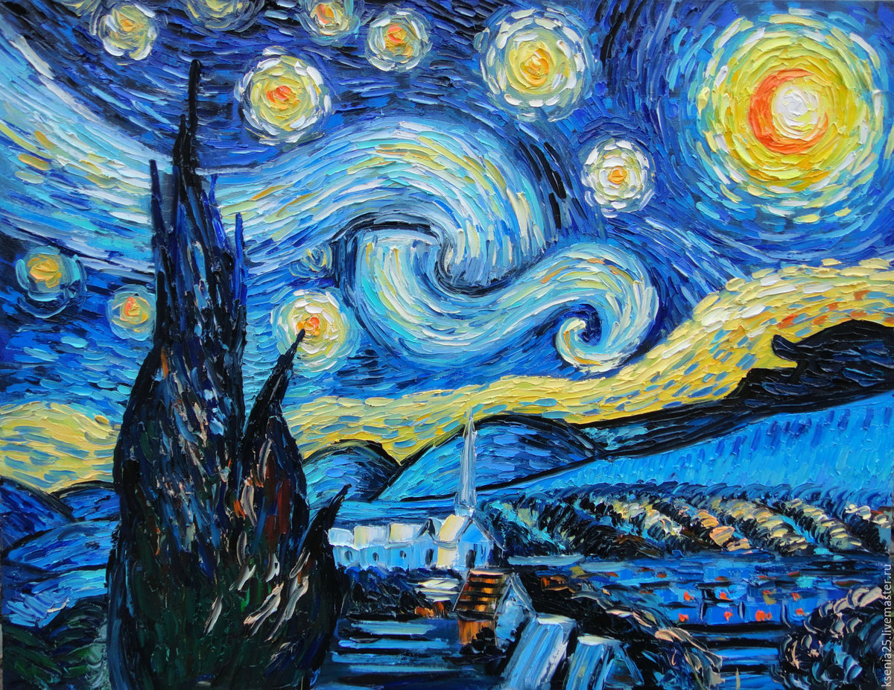

Моя история, как художника, началась довольно давно. Я, кажется, пошла только в 1 класс и мои родители, по моей просьбе, записали меня в Художественную школу. По началу, мне было не так весело. В группе мы учились смешивать цвета, рисовать разными материалами и пытаться перенести на бумагу все вокруг. Казалось бы, все нормально, ты рисуешь, тебя учат как правильно держать в руках кисть и рисовать солнце не в углу листа, а там, где оно на самом деле, но была одна загвостка - друзей у меня не было. Я не была зажатой и скромной, мне хотелось делиться с кем-то впечатлениями, обсуждать что-нибудь на переменах, как другие, но так уж вышло, что я была той, что сидит тихонько за мольбертом и рисует радугу, когда внутри совсем тоскливо. Но долго это не продлилось. Мои успехи в рисовании были очень хорошими и меня перевели в группу, что была на уровень выше предыдущей. Там, стали заводиться новые знакомства и я стала обретать настощих друзей, которых у меня в школе рисования до сих пор не было. Спустя 6 лет, я закончила последний класс, защитила диплом и пошла на первый выпускной. Было не легко расставаться с людьми, с которыми провел столько времени и так привязался к ним, но я понимала, что это неизбежно. Многие поступили в колледжи по художественной специальности, кто-то решил продолжить заниматься дальше в этой школе для собственного развития и стал посещать дополнительные уроки, а кто-то, то есть я, настолько выматался за последений год, что просто не имел желания рисовать. Но всего пару месяцев. И вот, я снова берусь за кисть и пишу. Это доставляет мне неимоверное удовольствие. Я действительно люблю это дело, хоть и не думаю, что когда-нибудь стану работать как художник. Просто рисование близко мне, я хочу заниматься этим и буду. Рисовать по-другому — значит видеть по-другому. Я практикую новые техники, стараюсь обрести свой собственный стиль, путем долгих проб и многих зарисовок и это кажется мне правильным. Мы все как карандаши. Каждый рисует свою судьбу. Кто-то ломается, кто-то тупит, а кто-то затачивается и движется вперед. И я хочу двигаться дальше :)
